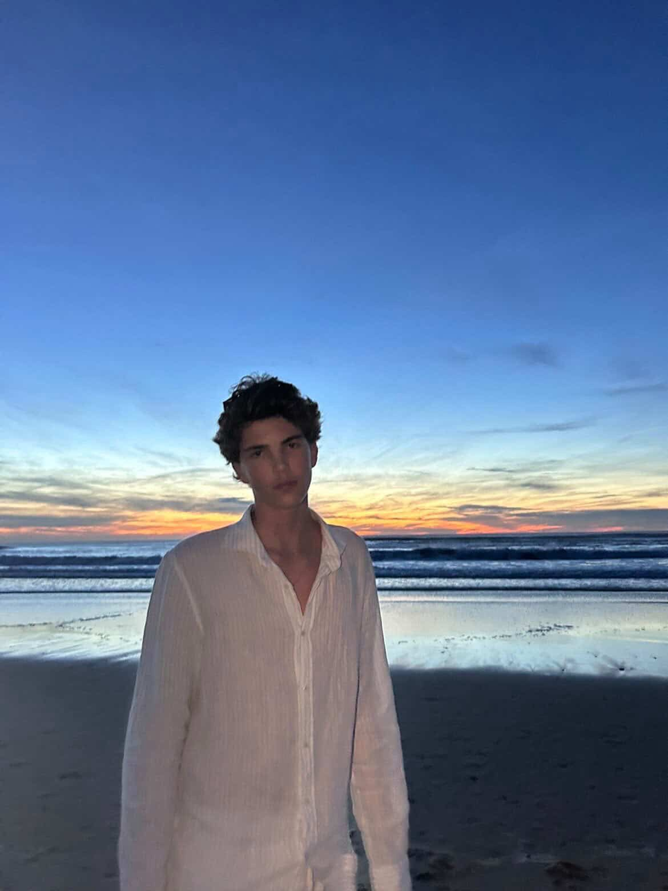

L'artiste
Né(e) en Castres. Vit et travaille à Agen. Une pratique centrée sur la peinture — la matière, le geste, le temps.
Démarche
Je peins ce que l'on ne peut pas nommer. Ces états de présence à la limite du visible — quand la lumière hésite, quand la matière cède avant de tenir.
Mon travail prend racine dans l'observation minutieuse du monde physique — la géologie, la lumière rasante, les surfaces usées par le temps. Mais ce n'est jamais une représentation fidèle. C'est une mémoire : ce que la sensation laisse après avoir traversé le corps.
Je travaille à l'huile, à l'acrylique, parfois en technique mixte. La toile de lin, le panneau de bois, le papier marouflé — chaque support impose sa logique, sa résistance, son rythme. Je ne choisis pas un support par habitude, mais pour ce qu'il permet ou interdit.
Le geste est lent. Les couches s'accumulent, disparaissent, réapparaissent. Une œuvre peut durer plusieurs mois avant de trouver son équilibre. Il n'y a pas d'esquisse préalable — la composition se découvre dans le faire.
Ce qui m'intéresse, c'est cette zone incertaine entre l'abstraction et la trace du réel : là où l'on reconnaît quelque chose sans pouvoir le nommer exactement. Une surface noire qui devient profondeur. Une lumière qui tremble sans jamais tout à fait se révéler.
« Peindre, c'est rester dans l'incertitude assez longtemps pour que quelque chose de juste apparaisse. »
Expositions
— [Titre de l'exposition], [Galerie / Lieu], [Ville], [Année]
— [Titre de l'exposition], [Galerie / Lieu], [Ville], [Année]
— [Titre de l'exposition], [Galerie / Lieu], [Ville], [Année]